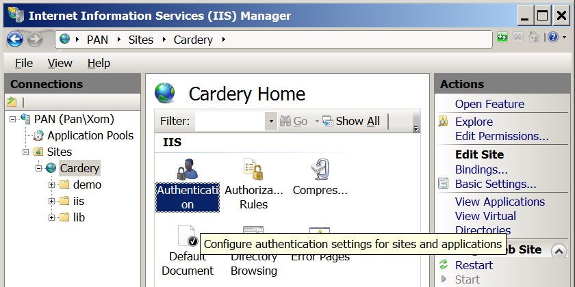

Here's how I enabled and configured Internet Information Services (IIS) on Windows 7 for localhost use with Cardery.
(IIS is the web server made by Microsoft.)
First I went to Control Panel → Programs and Features → Turn Windows features on or off, and checked "Internet Information Services" and "URL Authorization", as shown:
Then I opened the IIS Manager and went to IP Address and Domain Restrictions.
In the pane on the right, I clicked "Edit Feature Settings..." and set "Access for unspecified clients" to "Deny".
Then (also on the right), I clicked "Add Allow Entry..." and added an entry to allow requests from 127.0.0.1.
Then from the manager home page I went to "Output Caching". I added entries to "Prevent all caching" for all the file extensions I could think of.
Then I renamed and changed the default website to point to my Cardery folder.
Then on the right I went to "Edit Permissions..." to open the folder properties, Security tab, "Edit..." to open folder permissions and "Add..." the group "IIS_IUSRS".
Then I went to Sites → Cardery → Authentication, and clicked "Edit..." for the "Anonymous Authentication" entry to change it to "Application pool identity" which was for some reason needed in order not to get Access Denied when I tried to visit the site.

I think that's all the steps I did. Hopefully I didn't forget anything.